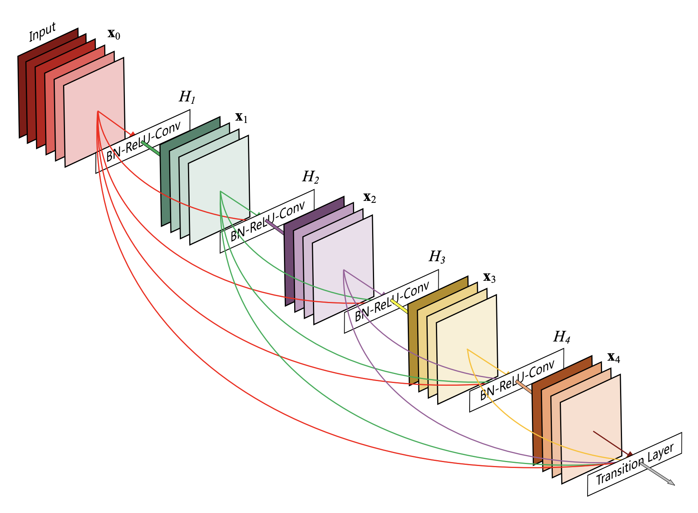
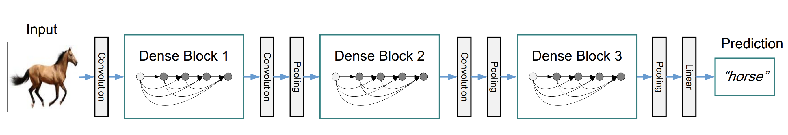
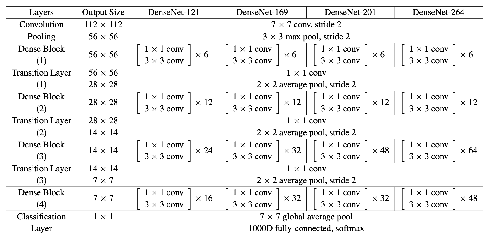
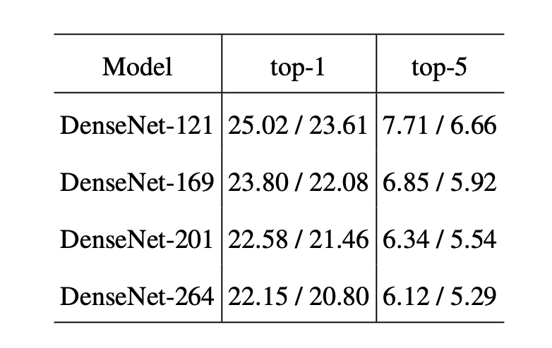
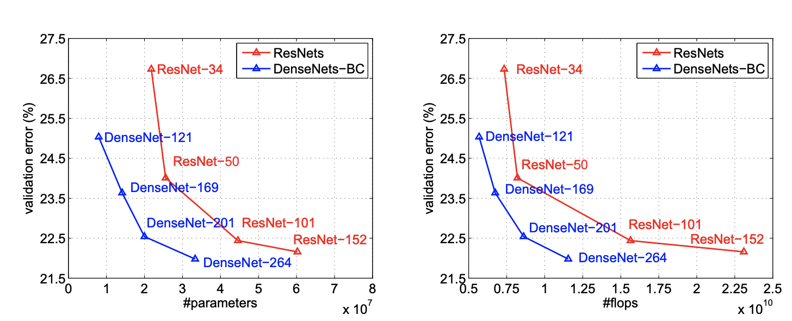

DenseNet - 2016
- ResNet이 add 했다면, 나는 concatenate 한다.😤
- 각 레이어의 능력을 알차게 활용하는 DenseNet review.
- DenseNet은 얼핏보면 단순히 Layer끼리 ResNet 보다 더 많이 연결돼 있는 것에 불과해 보여서, ResNet과 아주 닮아 있는 것 같지만 또 DenseNe만의 다른 관점으로 성능을 향상시키는 매력이 있는 네트워크입니다. ☺
1. Introduction
- 사실 DenseNet은 논문 introduction만 읽어도 할 말을 거의 다 하고 있는 것 같습니다. 기본적으로 DenseNet을 이루는 Dense Block은 아래와 같은 구조를 가지고 있습니다.

Growth Rate.
- 위 그림에서 Growth rate라고 부르는 $k$는 4로 설정되어 있는데요, 이것은 각 Conv layer의 Output으로 나오는 filter size를 뜻합니다. 그래서 그림을 자세히 보시면, input으로 받아서 들어오는 빨간색 계열 output을 제외한, 초록색, 보라색, 노란색, 주황색 모두 각 layer의 output filter 개수가 4개라는 것을 표현하고 있습니다.
- Dense Block을 설명하기 쉽게 $k=4$로 표현했지만, 실제로는 보통 $k=12$ 정도로 사용하는데요, 그래도 보통 filter를 백 단위로 사용했던 ResNet 및 여타 네트워크들을 생각해보면 참 작은 숫자인 것 같습니다. 그래서 다른 모델들 보다 더 “Narrow”한 네트워크라고 볼 수 있습니다.
Collective knowledge. 😎
- 그 다음 특징으로, 이렇게 각 Layer에서 나온 feature map들은 같은 Dense Block 내에서는, 자신의 후행하는 ‘모든’ Layer에 Input으로 전해집니다! 전하긴 전하는데, 어떻게? ResNet의 경우 add를 해서 수치를 Summation 하지만, DenseNet은 Concatenation - filter size만 늘리는 - 을 수행합니다.
- 그 결과로, Dense Block의 Layer들은 일종의 “집단지성”을 발휘하는 것 같은 효과를 가집니다. $H_1$의 output은 $H_2$의 input으로 들어가면 아무래도 $H_2$에 의해, 조금 새롭게 재해석이 되어 $H_3$으로 전달 될 것입니다. 그러나, $H_1$은 오염(?)되지 않은 자신의 output을 $H_3$에 그대로 또 전달을 하는 식입니다. 이런 점을 논문에서는 “feature reuse”라고 표현합니다.
- 마치, 각 레이어가 자신만의 의견을 모든 의사결정과정에서 피력하는 것 같은 느낌이죠.
2. Related Work
Variations of ResNet
2015년 ResNet의 등장 뒤로 ResNet을 변형한 형태의 많은 논문들이 나왔습니다. 대표적으로 2016년 3월에 나온 ‘Deep networks with stochastic depth’에서는 1202-layer ResNet을 학습하면서, 레이어를 랜덤하게 dropping하는 방식으로 성능을 향상시킵니다. 이 부분에서 DenseNet 저자는,
“이 것은 모든 레이어가 필요한 것은 아닐 것이며, 아마도 Deep Residual networks에 상당한 redundancy가 발생하고 있다는 증거다.”
- 라고 가설을 세웁니다. 그래서 feature reuse를 통해, “굳이 너무 깊이 들어가지말고 가지고 있는 정보를 최대한 사용(exploit)해서 레이어가 가지고 있는 potential을 극대화하자”.에 포커싱을 맞추면서 DenseNet이 나오게 됩니다. 멋진 insight네요.😮 그럼 어떻게 가지고 있는 포텐셜을 어떻게 극대화 시킬까요. 그 방법론에 힌트를 얻은 것이 Deeply Supervised Nets입니다.
Deeply Supervised Network (DSN)
ResNet 이전에 2014년 9월에 나온 Deeply-Supervised Nets는 각 레이어마다 Classifier를 붙여서 아주 직관적인 학습을 하는..😯
(구현할 때 얼마나 괴로웠을까..)방식으로 모델을 학습하는데요. 그래서 각 레이어들이 directly supervised 되는 효과를 가집니다. 각 레이어가 각자만의 고유한 feature를 학습하는 효과를 강화시킬 목적을 가지고 있습니다.DenseNet의 저자는 또 이 부분을 차용해서 DenseNet의 각 레이어가 자신의 영향력을 아래에 있는 레이어들에게 최대한 행사할 수 있게 다 연결해버립니다. 😏 이렇게 연결시킨 feature들은 모두 summation이 아니라 concatenation을 한다고 이미 언급하였습니다. 저자는,
“서로 다른 레이어에서 학습한 feature-maps를 concatenating 하는 것은 후행하는 레이어들의 input으로써의 다양성(variation)을 증가시키고, 효율성을 증가시킨다.”
라고 말합니다. 논문에서는 3. DenseNet 부분에서 나오는 부분이지만 수식으로 ResNet과 DenseNet을 비교하면,
ResNet: $x_l = H_l(x_{l-1)}+ x_{l-1}$,
DenseNet: $x_l = H_l([x_0, x_1, \cdots , x_{l-1}])$
로 표현할 수 있는데요, ResNet은
+를 하는 지점에서 아마도 네트워크의 정보 흐름을 저해할 수 있다고 저자는 말합니다. 이 부분이 ResNet과 DenseNet의 가장 큰 차이라고 명시하고 있습니다.
3. DenseNets
- 자, 드디어 DenseNet 전체 구조에 대해 말해 볼 차례입니다. 아래 그림을 봐주시죠.

Composite function
- 이때까지 열심히 이야기한 Dense Block 3개로 이루어져 있는 DenseNet입니다. 먼저 각 Dense Block에 있는 레이어들은
Composite function라고 칭하고BN-ReLU-3x3 Conv순서로 연속적으로 실행합니다. 서로 feature map들을 합쳐야 하기 때문에 feature size가 같을 수 있게 padding을 두른채로 진행됩니다.
Transition layers
- Dense Block 사이 사이에 있는 Conv와 Pooling layer는 합쳐서 transition layer라고 합니다. Transition layer는
BN-1x1 Conv-2x2 avg pool순서로 이루어져 있습니다. Block 내에서는 feature map size가 같기 때문에 이 transition layer의 pooling에서 2x2 pool을 이용해서 이미지 사이즈를 줄여줍니다.
Bottleneck layers (DenseNet-B)
- 아무리 각 레이어가 $k$ output feature-map만 가진다고 하더라도 티클모아 태산이죠. 그래서,
1x1 Conv를 통해 filter size를 적절히 줄일 수 있도록 Composite function 앞에BN-ReLU-1x1 Conv를 추가하여,BN-ReLU-1x1 Conv-BN-ReLU-3x3 Conv으로 $H_l$를 구성한 것을 Bottleneck layer라고 합니다. - 이렇게 Bottleneck layer를 사용한 DenseNet을 DenseNet-B라고 칭합니다. 저자는 실험에서
1x1 Conv의 output filter size를 $4k$로 고정하여 사용했다고 합니다.
Compression (DenseNet-C, DenseNet-BC)
- Dense Block 안에서 모델 압축은 Bottleneck layer로 해결했다면, Dense Block과 Block 사이인 Transition layer의
1x1 Conv를 사용해서 filter size를 또 줄일 수 있습니다. - 만약 한 Block에서 $m$개의 feature-maps을 transition layers로 전달했다고 한다면, transition layer는 $\lfloor{\theta m}\rfloor$ output feature maps를 만들게 해줍니다. $\theta$는 0과 1사이의 숫자로 정할 수 있고, 1인 경우 아무런 차원축소 없이 그대로 전달하게 됩니다.
- 논문에서는 $\theta = 0.5$를 사용했고, $\theta < 1$인 transition layer를 사용하는 DenseNet을 DenseNet-C라고 칭합니다. Bottleneck layers와 Transition layer에서 $\theta <1$를 둘 다 사용한다면 DenseNet-BC라고 칭합니다.
Implementation Details
- 자세한 구현은 논문을 참조해주세요 😉. 이번 포스팅에서는 ImageNet 데이터셋에 사용된 DenseNet 구조만 언급하도록 하겠습니다. 아래 표에 나오는 모든
conv는BN-ReLU-Conv를 뜻합니다.

4. Experiments
- ImageNet 실험 결과는 아래와 같습니다. ResNet과 비교하여 비슷한 성능을 내면서 Parameter는 1/3 수준인 결과를 볼 수 있습니다.

with single-crop / 10-crop testing

- 이상으로 DensNet 리뷰를 마치도록 하겠습니다. 읽어 주셔서 감사합니다! 🙇
References
- DenseNet paper